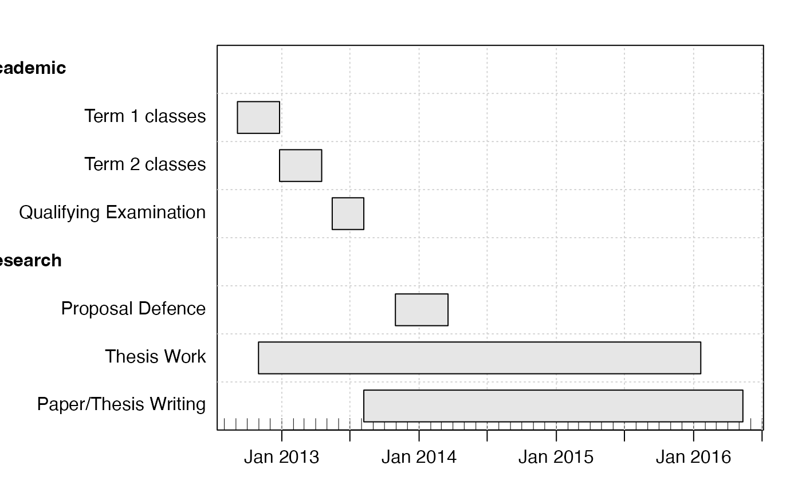

This creates a gantt object.
as.gantt(key, description, start, end, done, neededBy)integer key for task, normally 1 for the first task, 2 for the second, etc.
character string describing the task (brief)
start date for task (POSIXt or character string that converts
to POSIXt with as.POSIXct()
end date for task (POSIXt or character string that converts to
POSIXt with as.POSIXct().
percentage completion for the task
optional key for a dependent task
A gantt object; for details, see read.gantt().
Other things related to gantt data:
gantt-class,
ganttAddTask(),
gantt,
plot,gantt-method,
read.gantt(),
summary,gantt-method
library(plan)
arrive <- as.POSIXct("2012-09-05")
month <- 28 * 86400
year <- 12 * month
leave <- arrive + 4 * year
startT1 <- arrive
endT1 <- startT1 + 4 * month
startT2 <- endT1 + 1
endT2 <- startT2 + 4 * month
startQE <- arrive + 9 * month
endQE <- arrive + 12 * month
QEabsoluteEnd <- arrive + 15 * month
startProposal <- arrive + 15 * month # for example
endProposal <- arrive + 20 * month
startThesisWork <- arrive + 2 * month # assumes no thesis work until 2 months in
endThesisWork <- leave - 4 * month
startWriting <- leave - 36 * month
endWriting <- leave
g <- as.gantt(key=1:8, c("Academic",
"Term 1 classes",
"Term 2 classes",
"Qualifying Examination",
"Research",
"Proposal Defence",
"Thesis Work",
"Paper/Thesis Writing"),
c(startT1, startT1, startT2, startQE, startProposal, startProposal,
startThesisWork, startWriting),
c(startT1, endT1, endT2, endQE, startProposal, endProposal,
endThesisWork, endWriting),
done=rep(0, 7))
plot(g, xlim=c(arrive, leave),
ylabel=list(font=c(2,rep(1,3),2), justification=c(0,rep(1,3),0)))
